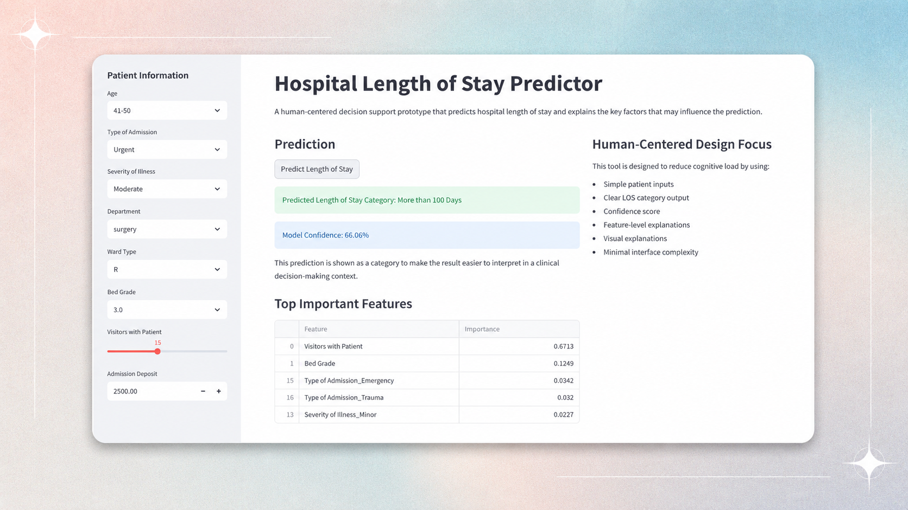
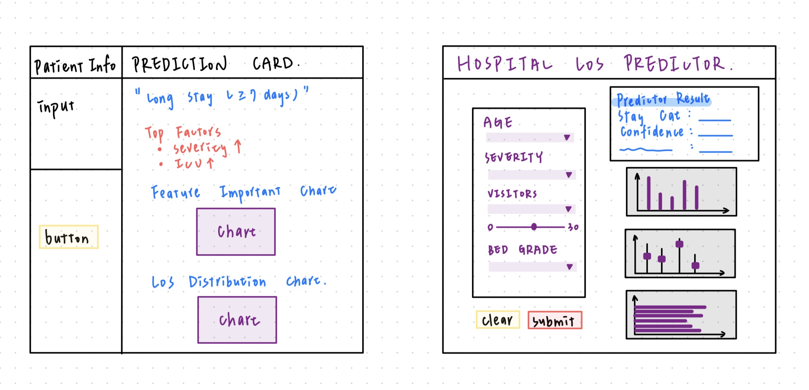
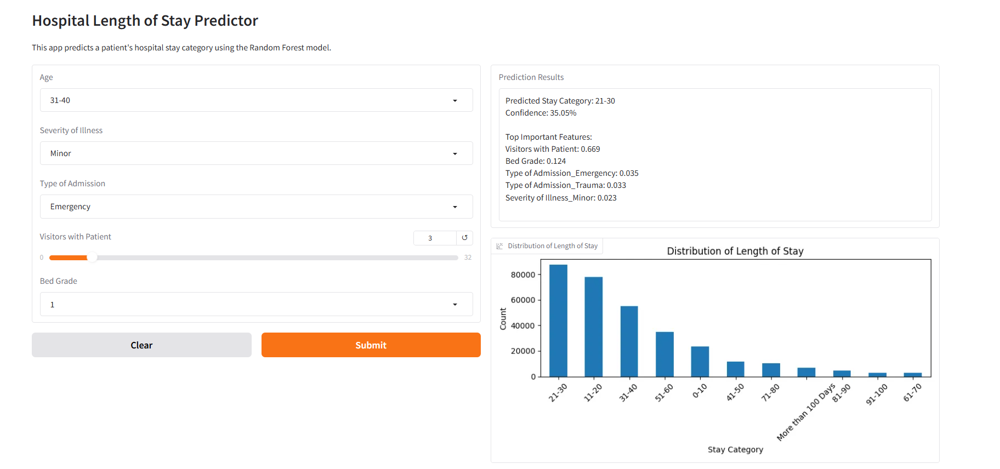
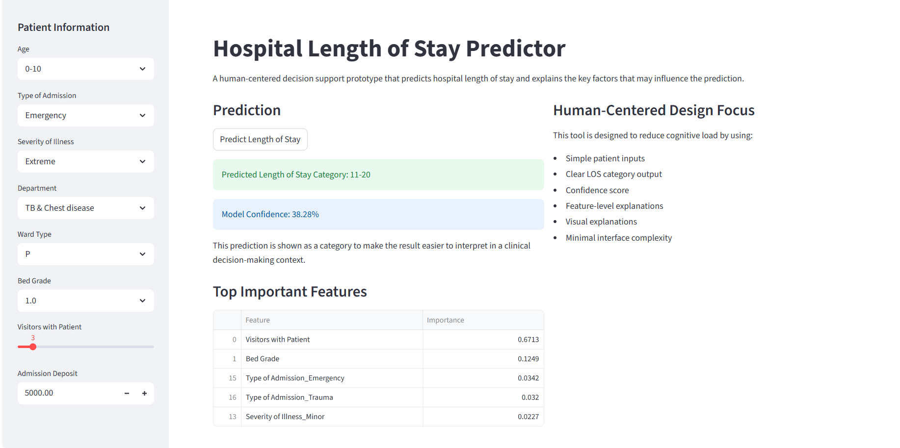

DECISION-SUPPORT DASHBOARD
Making Hospital LOS Prediction More Interpretable
March 2026 – May 2026

Intro
Hospital length of stay impacts patient outcomes, discharge planning, hospital capacity, staffing, and cost. However, many prediction tools are difficult to interpret or are not designed around real clinical workflow needs.
This project focused on building a prototype that balanced machine learning, usability, interpretability, and human-centered design. Instead of only showing a prediction, the tool helped users understand the predicted stay category, model confidence, and key factors influencing the result.
Skills
Machine Learning, Human Factors Engineering, Health Technology, Python, Streamlit, Gradio, scikit-learn, Data Preprocessing, Model Evaluation, Feature Importance, Usability Analysis, Decision-Support Design
My Role
As part of the Hospital Length of Stay project team, I contributed across UI design, user-centered research, model evaluation, results analysis, and presentation development.
- Translated clinical workflow needs into a clearer dashboard structure focused on prediction, confidence, and explanation.
- Reviewed usability and interpretability considerations to make the model output easier to understand in a planning context.
- Compared Decision Tree and Random Forest performance using model evaluation metrics and documented model limitations.
- Contributed to results analysis, chart interpretation, and presentation materials that explained the human-centered value of the dashboard.
Problem
Hospitals and care teams often need to estimate how long a patient may stay in the hospital to support resource planning, discharge coordination, and care management. Existing LOS prediction tools can be model-focused, complex, or difficult for end users to interpret quickly.
The design challenge was not only to build a predictive model, but to create a tool that could answer: What is the predicted length-of-stay category? How confident is the model? What factors contributed to the prediction?
Background Evidence
Hospital length-of-stay prediction can support healthcare planning because earlier LOS estimates may help teams think through resource allocation, capacity, and care coordination. In this project, LOS prediction was treated as a planning-support problem rather than a replacement for clinical judgment. [1]
The project also connects to discharge planning and care-transition needs. AHRQ emphasizes that safe hospital discharge requires effective transfer of information among clinicians, patients, and families to reduce adverse events and prevent readmissions. This shaped the design focus on clear outputs, simple explanations, and information that could support planning conversations. [2]
Because machine learning tools can be difficult to trust when outputs are unclear, the dashboard prioritized interpretability and explainability. The prototype shows the predicted LOS category, model confidence, and top contributing features so users can understand the output instead of seeing a prediction alone. [3]
Dashboard User Needs
To make the predictive model more useful in a healthcare planning context, we translated the problem into four dashboard needs focused on clarity, uncertainty, transparency, and planning support.
01
Quickly understand the prediction
Users need a clear LOS category without sorting through raw model output or complex probability tables.
02
Understand uncertainty
Users need confidence information so the prediction is not treated as an absolute answer.
03
See why the model predicted that result
Users need top contributing features to make the model output more transparent and easier to review.
04
Use the output for planning
Users need information that can support resource planning, discharge coordination, and care conversations.
From Model Output to Human-Centered Dashboard
A key design goal was to move beyond a model-focused output and create a dashboard that helps users interpret the prediction quickly and responsibly.
Model-focused output
Harder to interpret quickly
- Raw prediction class or probability
- Feature weights without explanation
- Metrics shown without workflow context
- Limited support for uncertainty
- Harder for non-technical users to review
Human-centered dashboard
Prediction becomes easier to use
- Clear LOS category
- Confidence score
- Top important features
- Supporting visualizations
- Simple input, prediction, and explanation layout
Users / Stakeholders
The tool was designed for potential healthcare stakeholders such as clinicians, care teams, hospital administrators, care coordinators, and hospital staff. These users need quick, interpretable information to support planning, rather than complex model outputs.
The prototype was designed as a proof-of-concept decision-support tool, not a clinically validated system or replacement for clinical judgment.
Research & Design Methods
The project followed a human-centered machine learning workflow, moving from dataset preparation and model comparison to dashboard design and explainability.
01
Prepare Dataset
Cleaned and encoded the AV Healthcare Analytics II dataset for model development.
02
Frame Prediction
Treated LOS as a classification problem so the output could be shown as a stay category instead of exact days.
03
Compare Models
Compared Decision Tree and Random Forest models using accuracy, precision, recall, and ROC-AUC.
04
Explain Output
Used feature importance to help users understand which factors contributed most to the prediction.
05
Design Dashboard
Built a dashboard around input, prediction, confidence, and explanation to reduce interpretation effort.
User Flow
The prototype was organized around a simple decision-support workflow. The goal was to help users move from patient inputs to prediction interpretation without needing to understand the full machine learning pipeline.
Process
The project followed a simple decision-support workflow: input → prediction → explanation. A small set of interpretable features was selected, including age, severity of illness, type of admission, visitors with patient, and bed grade.
The prototype evolved through multiple stages, starting from a low-fidelity sketch, moving into an early interactive prototype, and ending with a more refined dashboard. Each stage focused on improving clarity, interpretability, and reduced cognitive load.
Key Design Decisions
01
Predict LOS as a category instead of exact days
The model output was shown as a length-of-stay category to make the result easier to interpret and avoid presenting the prediction as more precise than it really is.
02
Show confidence with the prediction
Confidence output helps users understand uncertainty and avoid treating the model result as an absolute answer.
03
Include top important features
Feature-importance information supports transparency by showing which patient or admission-related factors contributed most to the prediction.
04
Use a simple dashboard layout
The final layout separates patient inputs, prediction output, confidence, and explanation to reduce cognitive load and support quicker review.
Prototype Development
The prototype evolved through multiple stages of design and refinement, beginning with a rough sketch, followed by a midpoint interactive prototype, and culminating in a more polished final dashboard.
01 Rough Sketch
Established the information hierarchy for patient inputs, prediction output, top factors, and supporting charts.
02 Midpoint Prototype
Built the first functional workflow with input controls, prediction results, confidence, and LOS distribution.
03 Final Prototype
Refined the layout to improve readability, reduce cognitive load, and support explanation.
Click any prototype image below to open a larger view. This makes the design process and interface details easier to review without needing to run the external prototype.

Open larger ↗Stage 01 · Rough Sketches
Exploring and refining the dashboard structure
The first sketch established the information hierarchy for patient inputs, prediction output, important factors, and supporting charts. The second sketch refined the layout by separating patient controls from prediction results and grouping the visualizations for faster review.

Open larger ↗Stage 02 · Midpoint Prototype
Building the first functional workflow
Introduced interactive patient inputs, LOS prediction, confidence output, and a distribution chart in one working interface.

Open larger ↗Stage 03 · Final Prototype
Improving clarity and explanation
Refined the visual hierarchy and separated patient inputs, LOS category, confidence, and important features to support faster interpretation.
Key Findings / Outcome / Impact
The final prototype connected model output with explanation and visual context, rather than presenting a prediction alone.
Interpretable Prediction
Shows LOS as a category to make the result easier to understand in a planning context.
Uncertainty Communication
Includes confidence output to help users understand that predictions are not absolute.
Feature-Level Explanation
Displays top important features so users can review what influenced the model result.
Visual Context
Uses charts to connect the prediction with interpretable patterns in the dataset.
To support results analysis, the project also included visualizations that explored relationships between admission type, visitor count, and length-of-stay categories. These charts helped connect the model output to interpretable patterns in the dataset and informed the final dashboard explanation structure.
Click any result image below to open a larger view of the chart.


Reflection / Next Steps
References / Links
Note: Prototype hosted externally on Hugging Face Spaces by a project teammate. Screenshots are included here to preserve the design process and final interface.
[1] Hansen, E. R., Nielsen, T. D., Mulvad, T., Strausholm, M. N., Sagi, T., & Hose, K. (2023). Hospitalization length of stay prediction using patient event sequences. Source
[2] Agency for Healthcare Research and Quality. Care transitions from hospital to home: IDEAL discharge planning. Source
[3] Amann, J., Blasimme, A., Vayena, E., Frey, D., & Madai, V. I. (2020). Explainability for artificial intelligence in healthcare: A multidisciplinary perspective. BMC Medical Informatics and Decision Making, 20, 310. Source